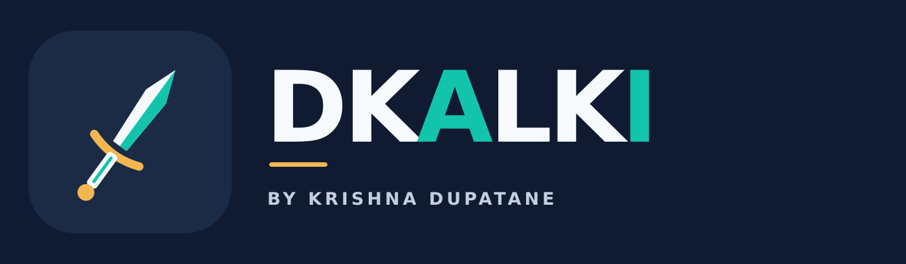

Cloud & platform foundations
Plan and improve AWS environments, Kubernetes/EKS platforms, access controls, and dependable deployment foundations.
- AWS and Kubernetes reviews
- Infrastructure architecture
- Platform reliability basics

Find the intelligence within.
Feel the product.
Practical cloud, DevOps and platform engineering for software that needs to run reliably and grow with confidence.
WAYS TO WORK TOGETHER
Start with a clear problem and a practical scope. We can adapt the work as your product and needs evolve.
Plan and improve AWS environments, Kubernetes/EKS platforms, access controls, and dependable deployment foundations.
Improve system visibility and make incidents easier to investigate, mitigate, and learn from.
Add practical security checks to infrastructure and software delivery, with clear results teams can act on.
Each engagement is scoped to the need, environment, and access available. No production changes happen without an agreed plan.
LEARN BY BUILDING
Independent demos and labs, documented to show the ideas, trade-offs, and ways to reproduce the work.
Probes, resource limits, non-root execution, debugging notes, and a concise runbook.
Explore demo TERRAFORM · DELIVERYA local-first plan, review, and apply workflow for learning repeatable infrastructure delivery.
Explore demo DEVOPS · HANDS-ON LABSIndependent examples in Linux troubleshooting, batch processing, and quality gates.
Open portfolio repoHands-on reference work with OpenTelemetry, Prometheus, Grafana, Loki, Tempo, alerting, PostgreSQL lock investigation, and recovery planning.
Independent SRE labReference labs cover secrets, SAST, dependency and container scanning, Terraform checks, policy as code, DAST, and AWS WAF tuning.
Independent DevSecOps labABOUT DKALKI
DKALKI is an independent technology practice by Krishna Dupatane. It brings together hands-on cloud engineering, delivery automation, security, and reliability work.
This portfolio is an evolving starting point. New demos, services, and product ideas will be added as they are built and validated.
Connect through GitHub